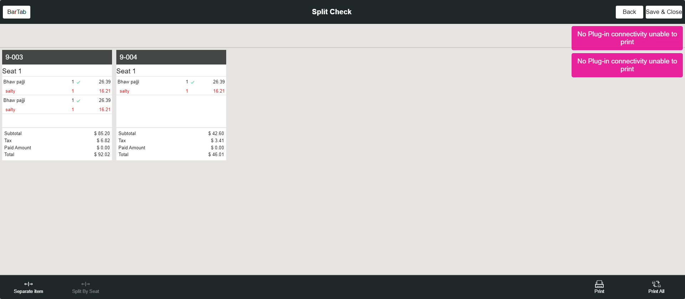

-
Basic Validation
15:43:03 PM / 33:49:048 Fail
Basic Validation
12.27.2023 15:43:03 12.27.2023 15:46:52 33:49:048 · #test-id=1FailSplit Check By BarTab ScreenGiven I'm logged inAnd I closed the order type windowAnd I click AllAnd I click BarTab LayoutAnd I click NewTab from BarTab LayoutAnd I click add button to create seat in order screenAnd I click seat 1 for add menu itemAnd I select Menu For Bartab order type as "North Indian dish" for split CheckAnd I click Finish buttonAnd I click Check Stats tabThen I should see active checkAnd I click BarTab LayoutAnd I click split button on the bartab screenAnd I click split check buttonWhen I click the check from the bartab screenThen I should see the Split check screenWhen I verify the Active check with split checkAnd I click Add Button on the split check screenThen I should see new check added on the split check screenAnd I click the menu on the split check screenAnd I click new check added on the split check screenWhen I verify the menu is moved to the added check seatAnd I click new check added on the split check screenAnd I click print button in the split check screenThen I should see please save all the changes to print popupAnd I click yes to open Close Till ScreenWhen I verify the check is splitted and check number is increasedAnd I click print All Button in the split check screenAnd I click the menu on the split check screenAnd I click Seperate item buttonAnd I select the number of split item "2" for Split checkAnd I click the Continue buttonThen I should see menu has separated as "2"And I click the save & close button on the split screenThen I Should get back to the Order ScreenWhen I verify primary check is opened after split check is doneAnd I click Cash button for Complete SaleAnd I click Exact button on the cash pop-upAnd I click Enter Button on the cash pop-upAnd I click BarTab LayoutAnd I click Check Stats tabWhen I verify the splitted check is available in active checks tabAnd I click BarTab LayoutAnd I click NewTab from BarTab LayoutAnd I click add button to create seat in order screenAnd I click seat 1 for add menu itemAnd I select Menu For Bartab order type as "North Indian dish" for split CheckAnd I click Finish buttonAnd I click Check Stats tabThen I should see active checkAnd I click BarTab LayoutAnd I click split button on the bartab screenAnd I click split check buttonWhen I click the check from the bartab screenThen I should see the Split check screenWhen I verify the Active check with split checkThen I should see seat available in the split check1And I click split by seat in the split check screenThen I should see new check added on the split check screenAnd I click the menu on the split check screenAnd I click new check added on the split check screenWhen I verify the menu is moved to the added check seatAnd I click new check added on the split check screenAnd I click print button in the split check screenThen I should see please save all the changes to print popupAnd I click yes to open Close Till ScreenWhen I verify the check is splitted and check number is increasedAnd I click print All Button in the split check screenThen I should see Receipt Printer popupAnd I click Done button on the PopupStep skippedAnd I click the menu on the split check screenStep skippedAnd I click Seperate item buttonStep skippedAnd I select the number of split item "2" for Split checkStep skippedAnd I click the Continue buttonStep skippedThen I should see menu has separated as "2"Step skippedAnd I click the save & close button on the split screenStep skippedThen I Should get back to the Order ScreenStep skippedWhen I verify primary check is opened after split check is doneStep skippedAnd I click Cash button for Complete SaleStep skippedAnd I click Exact button on the cash pop-upStep skippedAnd I click Enter Button on the cash pop-upStep skippedAnd I click Check Stats tabStep skippedWhen I verify the splitted check is available in active checks tabStep skippedAnd I click power button in the All Orders screenStep skippedcom.qa.stepdef.Hooks.quit(io.cucumber.java.Scenario)
-
org.openqa.selenium.InvalidSelectorException
1 tests
org.openqa.selenium.InvalidSelectorException
1 failedStatus Timestamp TestName Fail 15:46:51 PM Then I should see Receipt Printer popup Basic Validation.Split Check By BarTab Screen.Then I should see Receipt Printer popup
-
@MainBAsic
1 tests
@MainBAsic
1 failedStatus Timestamp TestName Fail 15:43:03 PM Split Check By BarTab Screen Basic Validation.Split Check By BarTab Screen
Started
Dec 27, 2023 03:43:01 PM
Ended
Dec 27, 2023 03:46:52 PM
Features Passed
0
Features Failed
1
Features
Scenarios
Steps
Timeline
Tags
| Name | Passed | Failed | Skipped | Others | Passed % |
|---|---|---|---|---|---|
| @MainBAsic | 0 | 1 | 0 | 0 | 0% |